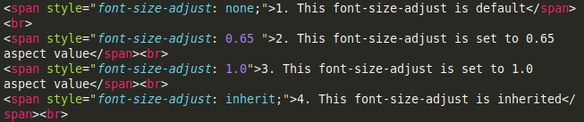

Sample Code
Output
1. This font-size-adjust is default
2. This font-size-adjust is set to 0.65 aspect value
3. This font-size-adjust is set to 1.0 aspect value
4. This font-size-adjust is inherited
The font-size-adjust property gives you better control of the font size when the first selected font is not available.
When a font is not available, the browser uses the second specified font. This could result in a big change for the font size. To prevent this, use the font-size-adjust property.
font-size-adjust: number|none|initial|inherit;
| Value | Description |
|---|---|
| number | Defines the aspect value to use |
| none | Default value. No font size adjustment |
| inherit | Default value. No font size adjustment |
1. This font-size-adjust is default
2. This font-size-adjust is set to 0.65 aspect value
3. This font-size-adjust is set to 1.0 aspect value
4. This font-size-adjust is inherited
font: font-style font-variant font-weight font-size/line-height font-family|caption|icon|menu|message-box|small-caption|status-bar|initial|inherit;
| Value | Description |
|---|---|
| caption | Uses the font that are used by captioned controls (like buttons, drop-downs, etc.) |
| icon | Uses the font that are used by icon labels |
| menu | Uses the fonts that are used by dropdown menus |
| message-box | Uses the fonts that are used by dialog boxes |
| status-bar | Uses the fonts that are used by the status bar |
Note : The output of the font is browser dependent.
1. The font used in captioned controls
2. The font used in icon labels
3. the font used in dropdown menus
4. The font used in dialog boxes
5. The smaller version of the caption font
6. The font used in the status bar.